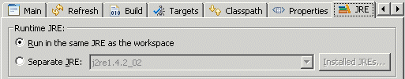

codepro.audit
This function is deprecated and has
been replaced by the
instantiations.audit
Ant Task in
CodePro AnalytiX Server
.
Description
An Ant task that performs a code audit. This is identical to the
Audit Code command available via the
Application Developer and Eclipse IDE user interfaces. This can be run
inside the Eclipse IDE or as a headless audit
with project defaults.
Attributes
The following is a list of the attributes supported for the
codepro.audit task.
| Attribute |
Description |
Required |
| classpath |
The classpath used for resources that exist outside of the projects
contained by the current Eclipse workspace. The classpath attribute is
a path-like
structure and can also be set via a nested
<classpath> element similar to the classpath
attribute in the
javac
Ant task.
Note: The classpath attribute relies on functionality that
exists in Eclipse 2.1, but not in Eclipse 2.0 / Application
Developer 5.0. If you want to use this, you will have to download and
install Eclipse 2.1. See the notes on the
Eclipse headless Ant environment.
|
No |
| auditRuleSetName |
The name of the
audit
rule set that will be used to generate audit violations. If the
auditRuleSetFile attribute is specified (see below) then
the named audit rule set in the specified file is used, otherwise the
named audit rule set in the workspace is used. If no audit rule set
name is specified then either the first audit rule set in the file or
the default audit rule set in the workspace is used depending upon
whether or not the auditRuleSetFile attribute is specified.
|
No |
| auditRuleSetFile |
The absolute or relative path to the file that contains the
audit
rule set to be used. If the auditRuleSetName attribute
is specified (see above) then the audit rule set located in the
specified file with the specified name is used, otherwise the first
audit rule set in the file is used. If the auditRuleSetFile
attribute is not specified, then an audit rule set from the workspace
is used. Either the export
preferences command or the
export
button on the audit preference page can be used to generate a file
containing audit rule sets.
|
No |
| storageLocation |
A designation of the storage location in which the audit result set
will be stored. It can be either workspace (the default)
or project: followed by the name of a project.
|
No, default is workspace |
| violationCountThreshold |
The maximum number of violations that can be found by the audit before the
audit is considered to fail, as well as the list of severities that are
included in the count. These values are described by an expression composed
of a "+" separated list of severity names ("high", "medium" and "low") and
an integer threshold value, with the list being separated from the threshold
by a greater than (">"). For example, if the audit should fail if
more than 200 high or medium level violations are found, the attribute
would be specified as:
violationCountThreshold="high+medium>200"
If not specified then the audit will not fail.
|
No |
| resultProperty |
The base name used to compose the names of properties that will be given
values after an audit has been run. The following is a list of the
properties that will be set (where "result" is assumed to be the value of
this property):
result.exceededThreshold
"true" if the threshold specified by the
violationCountThreshold attribute is exceeded. The property
will not be set if the threshold is not exceeded or if the threshold is
not set.
result.resourceCount.total
- The number of resources that were audited.
result.violationCount.high
- The total number of high severity violations.
result.violationCount.low
- The total number of low severity violations.
result.violationCount.medium
- The total number of medium severity violations.
result.violationCount.total
- The total number of violations.
|
No |
| deleteTempProject |
This attribute exists for debugging purposes only. If a
classpath attribute is specified, then the
codepro.audit ant task creates a temporary project for use
during the audit process, and deletes that project after the audit is
complete. If this attribute is set to "false"
then the temporary project will not be deleted.
|
No, default is true |
Deprecated Attributes
The following attributes are deprecated in favor of more flexible
mechanisms. While they are still currently supported, they should be
replaced by the newer mechanisms, as described for each attribute.
| Attribute |
Description |
Required |
| resultFile |
Deprecated: use the nested report element instead
The absolute or relative path to the file to which audit results will be
written. If not specified, then no audit results will be written to any
file. Regardless of whether or not the resultFile attribute
is specified, if the ant task is being executed inside the IDE user
interface, then the audit results will be available from the
Audit view.
|
No |
| resultFormat |
Deprecated: use the nested report element instead
The format in which the audit results will be written. If not specified,
then the results will be written in a simple text format. Currently
supported formats include:
commaSeparatedDatacsvSummaryhtmltabSeparatedDatatextxml
|
No, default is text |
| groupBy |
Deprecated: use the nested report element instead
The way in which the audit violations are grouped in the result file. If
not specified, then the results will be grouped by audit rule.
Currently supported groupings include:
audit ruleaudit rule groupauthorresourceseverity
|
No, default is audit rule |
| reportFilter |
Deprecated: use the nested report element instead
The filter used to restrict which violations are included in the report
that is generated. Only those violations whose severity level is included
in the given list will be included in the generated report. This attribute
is ignored if the report file is not specified. If this attribute is not
specified, all severities of violations will be included in the report
(assuming a report is generated).
|
No |
| violationCountProperty |
Deprecated: use the resultProperty attribute instead
The base name used to compose the names of properties that will be set to
the total number of violations and to the number of violations of each
severity level by appending a period and the name of the severity level
(or "total" for the total number of violations) to the base name.
For example, if the property name were vCount and there were 4
high, 6 medium, and 10 low severity violations, the property named
vCount.total would be set to 20, and the properties named
vCount.high, vCount.medium, and
vCount.low; would be set to 4, 6, and 10, respectively. If
not specified then no properties will be set to these values.
|
No |
| exceededThresholdProperty |
Deprecated: use the resultProperty attribute instead
The name of the property that will be set to
"true" if the threshold specified by the
violationCountThreshold attribute is exceeded. The
property will not be set if the threshold is not exceeded. This
attribute is ignored if the threshold is not set. If this attribute is
not specified, but the violationCountThreshold attribute
is specified, any audit that exceeds the threshold will cause this
task to fail.
|
No |
Nested Elements
The following elements can be nested within the codepro.audit
task.
<fileSet>
The standard Ant
FileSet
structure is used to specify which files are to be audited. If you specify
files outside of the projects contained by the current Eclipse workspace,
then you must specify a classpath or those external files will be ignored
by the codepro.audit ant task.
<classpath>
The classpath used for resources that exist outside of the projects
contained by the current Eclipse workspace. The classpath element is
similar to the classpath attribute in the
javac
Ant task.
<report>
The report element
is used to generate a report based on the results of the audit. Multiple
reports will be generated if the report element is included
multiple times.
<seriesReport>
The seriesReport
element is used to generate a report based on the results of a series of
audits. Multiple reports will be generated if the seriesReport
element is included multiple times.
<mailAuthors>
The mailAuthors
element is used to send e-mail to the authors of the resources that contain
violations. The body of the e-mail is a report that is filtered to contain
only those violations associated with the declared author.
Additional Notes
Both the report and seriesReport elements can be
used to generate reports on the result of running an audit. If you want to
make those reports available to a small number of people, both can have a
mail element nested within them. But if you want to make the
reports available to a larger number of people it might be better to use
the optional
ftp
Ant task to copy the generated file to an accessible location such
as a corporate or departmental web site.
Examples
The following Ant task will use the audit rule set named
"MyAuditRuleSet" contained in the file named
"code_audit.pref" to audit the files in the directory structure
rooted at "../MyJavaProject/src". After the audit is complete,
an XML report will be generated to the file named
"code_audit_result.xml" with the violations grouped by audit
rule. In addition, the report will be e-mailed to the project manager.
<codepro.audit
auditRuleSetName="MyAuditRuleSet"
auditRuleSetFile="code_audit.pref">
<fileSet dir="../MyJavaProject/src"/>
<report
file="code_audit_result.xml"
format="xml"
groupBy="audit rule">
<mail
username="user"
password="password"
from="testManager@company.com"
tolist="projectManager@company.com"/>
</report>
</codepro.audit>
The following Ant task will perform the same audit as the previous, but
will generate an e-mail message for each of the authors whose code
contains high-severity violations.
<codepro.audit
auditRuleSetName="MyAuditRuleSet"
auditRuleSetFile="code_audit.pref">
<fileSet dir="../MyJavaProject/src"/>
<mailAuthors
addressBook="addressBook.xml"
defaultAddress="testManager@company.com"
from="testManager@company.com"
groupBy="audit rule"
filter="high"/>
</codepro.audit>
Eclipse 3.0 Usage
Under Eclipse 2.1 and earlier, Ant tasks are run in the same JRE as the
IDE and can make use of Eclipse libraries. Under Eclipse 3.0, Ant tasks
are normally run in a separate JRE and don't have access to Eclipse
libraries. The codepro.audit Ant task requires access to various
Eclipse libraries, and therefore cannot run in a separate JRE. In order to
use the codepro.audit Ant task within Eclipse, you need to select
the Run in the same JRE as the workspace option from the JRE
page of the Run Ant dialog.

|